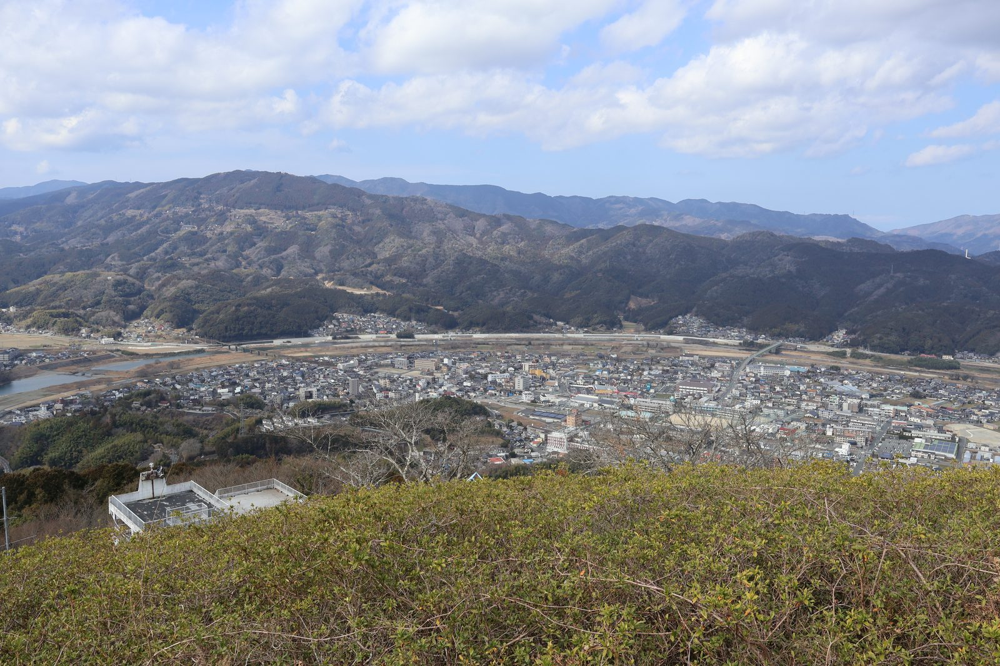

大洲の暮らし ・ 出典: 大洲市役所 ・ 約7分で読める
大洲市は「過疎地域」。持続的発展計画が映す危機感

 メモう
メモう
大洲は法律上「過疎地域」なんよ。
名前は寂しいけど、指定されると返済の7割を国が肩代わりしてくれる借金が使えるの。
県内では、減り方はゆるやかなほうだって。
3行でいうと調べた資料 5本
- 大洲市は法律上の「過疎地域」に指定されている。40年間の人口減少率などの国の基準による
- 指定されると、返済の7割を国が肩代わりする有利な借金(過疎債)が使える
- 県内の過疎指定12市町の中では減少ペースは緩やかな方。ただし松山市の2〜3倍速い
「大洲市過疎地域持続的発展計画」という資料を見つけた。令和３年10月８日に策定されて以降、 これまでに６回も変更されている。計画期間は令和３年度～令和７年度の５年間。
これまでの変更履歴は次のとおり。
- 令和４年５月
- 令和５年５月
- 令和６年３月
- 令和６年５月
- 令和７年５月
- 令和７年12月
【追記・2026年８月】令和３年度～令和７年度の計画は期間満了し、令和８年３月19日付けで新しい「大洲市過疎地域持続的発展計画（令和８年度～令和12年度）」が策定されている。上のリンク先も、いまは新しい計画のページに切り替わっている（更新日は2026年４月27日）。
過疎地域の指定自体は継続しており、大洲市の課題認識も基本的に引き継がれている。
計画の中身は、暮らしのほぼ全領域
正直、大洲市が法律上「過疎地域」に指定されているというのは、あまり意識したことがなかった。
目次を見ると、人口・産業の推移、移住・定住の促進、産業振興、情報化、交通施設の整備、生活環境の整備、子育て・高齢者福祉、医療の確保、教育の振興、集落の整備、地域文化の振興……と、暮らしのほぼ全領域をカバーする総合的な計画になっている。
これまで紹介してきた「統計書の人口推移」や「空き家対策計画」も、結局はこの「過疎地域」という 大枠の中の一部だったんだなと、繋げて考えると腑に落ちるものがあった。
ちなみに正式な法律用語・表記は「過疎（かそ）」で、「過疏」という書き方は誤字（「疎」と「疏」は 似ているが別の字）なので念のため。
そもそも、どうすれば「過疎地域」に指定されるのか
過疎地域に指定されるかどうかは、人口減少率や高齢者比率、財政力指数などの基準を市町村ごとに満たしているかで判定される。
具体的には、①昭和50年（1975年）から平成27年（2015年）までの40年間で人口が28％以上減少している（財政力指数が全町村平均の0.40以下ならハードルは23％以上に下がる）。②人口減少が23％以上あり、かつ65歳以上の高齢者比率が35％以上。③人口減少が23％以上あり、かつ15歳以上30歳未満の若年者比率が11％以下。④平成２年から平成27年までの25年間で人口が21％以上減少。この人口要件のどれかに当てはまり、そのうえで財政力指数が0.51以下（全市町村平均）という財政力要件も満たすことが条件になっている。
つまり「過疎地域」というのは単なるイメージではなく、40年という長いスパンで見た人口減少・高齢化・財政力の弱さを、国が法律の基準で線引きしたもの。
大洲市がこの基準を満たし続けているということ自体が、長期的な人口流出の深刻さを物語っているとも言える。
過疎に指定されると、具体的に何が変わるのか
「過疎地域」という指定そのものは、単なるレッテルではなく、実際の財政面でかなり大きな意味を持っている。
過疎地域に指定された市町村は、道路や上下水道、学校、地域医療施設といった幅広い事業の財源として「過疎対策事業債（過疎債）」という特別な地方債を発行できるようになる。
総務省の資料によると、この過疎債は充当率100％（事業費のすべてを借金でまかなえる）なうえに、その元利償還金の70％が、後から普通交付税（国から自治体に配られる、使い道が決まっていないお金）の基準財政需要額に算入される仕組みになっている。
ざっくり言うと、１億円の事業をこの起債で行った場合、実質的な自己負担は約3,000万円程度で済み、残りの約7,000万円分は国からの交付税で穴埋めされる、という計算になる。
過疎地域の指定を受けていない自治体は、同じ規模の事業をするにも、より重い自己負担を背負うことになる。
大洲市が指定を継続し続けているのは、こうした財政上の実利があってのことでもあるはずだ。
「指定されればラッキー」なのか。本当のところ
ここまで読むと「過疎地域に指定された方が国のお金で得するんじゃないの」と思うかもしれない。
実際そういう面はあるが、手放しで「ラッキー」とは言えない理由が２つある。
１つ目は、過疎債もあくまで借金だということ。充当率100％・交付税算入70％といっても、残りの30％は市が自己財源で返済する必要があり、過疎債を発行すればするほど市の借金残高そのものは積み上がっていく。
交付税で穴埋めされる70％分も、あくまで「基準財政需要額への算入」であって、その額がそのまま現金で振り込まれるわけではない。全国過疎地域連盟が国への要望の筆頭に「地方交付税を充実し過疎市町村の財政基盤を強化するとともに、過疎対策事業債の増額を図ること」を掲げているのも、裏を返せば、そこは安心しきれる部分ではないということなのだと思う。
２つ目、そして個人的にはこちらの方が本質だと思うのだが、過疎地域に指定される条件そのものが「40年間で人口が28％以上減った」という深刻な人口流出だということ。
過疎債で浮く数千万円より、その地域から出て行った担い手や、閉じた商店、減った税収基盤の方が、金額に換算できないくらい大きな損失のはずだ。
過疎債は、その傷をこれ以上広げないための「応急処置の道具」であって、指定されること自体が「得」なわけではない。
結論としては、「使わずに済むならそれに越したことはないが、現実に人口が減ってしまった以上、使える制度は最大限活用する」というのが実情に近いと思う。
愛媛県内、どこが過疎地域なのか
では愛媛県内でどこが過疎地域に指定されているのか、県の資料「過疎地域市町」（令和５年４月１日現在）を確認してみた。
愛媛県20市町のうち、大洲市を含む17市町が何らかの形で過疎地域の指定を受けている。
市域全体が指定されているのは、大洲市・宇和島市・八幡浜市・西予市・伊予市・内子町・伊方町・久万高原町・上島町・松野町・鬼北町・愛南町の12市町。
松山市・今治市・新居浜市・四国中央市・砥部町の５市町は市域の大部分は対象外だが、合併前の旧町村単位（松山市の旧中島町、新居浜市の旧別子山村など）では指定を受けている区域が残っている。
つまり「松山市以外」というより、松山市も一部（旧中島町）は過疎地域に含まれているのが実情だった。
指定を一切受けていないのは西条市・東温市・松前町の３市町のみ。
大洲市が最初に指定されたのは平成17年１月11日で、平成22年４月１日には宇和島市・愛南町とともに再度指定を受けている。
大洲市は県内で何位なのか
「大洲市は県内で何位か」も、人口減少率で見るとある程度輪郭が見えてくる。
民間の集計サイト「都道府県市区町村」による2020→2025年の人口減少率ランキングを、過疎地域指定の有無とあわせて表にしてみた。
出典: 「都道府県市区町村」人口減少率ランキング（愛媛県版）、愛媛県庁「過疎地域市町」
表にしてみると、大洲市は県内の過疎地域指定12市町の中では、人口減少のペースは比較的緩やかな方というのが実際のところ。全域が指定されている12市町で大洲市より減り方が緩やかなのは伊予市（▲4.77％）だけで、南予・中予山間部の過疎自治体の中ではまだ踏みとどまっている位置にいるようだ。
ただし、指定を受けていない松山市（▲2.77％）や東温市（▲3.31％）と比べれば、依然として減少ペースは２～３倍近く速い。
「過疎地域の中では上位」であって「県内全体で見て安心」ではない、という位置づけが正確なところだと思う。
半年に１回くらいのペースで計画が改定され続けているということは、それだけ状況の変化が速い、 あるいは対応すべき課題が次々出てきているということなんだろうと思う。
出典・参考にした資料
大洲市過疎地域持続的発展計画（大洲市公式サイト） 過疎地域市町（令和５年４月１日現在・愛媛県庁公式サイト） 人口減少率ランキング（愛媛県版）（都道府県市区町村） 過疎対策の概要について（総務省、令和３年度第１回過疎問題懇談会資料） 「過疎」のお話（一般社団法人全国過疎地域連盟）この記事をサイトに掲載した日: 2026/07/29